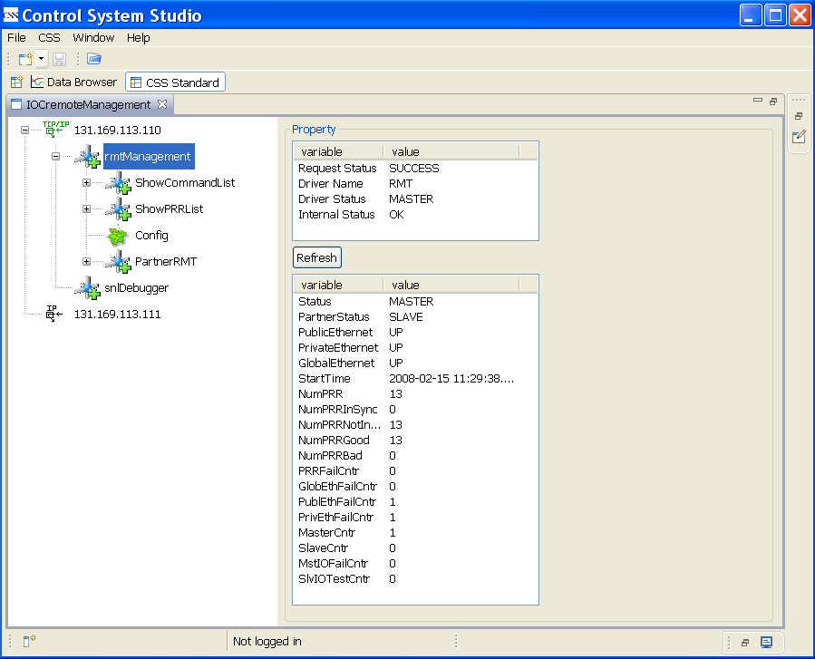
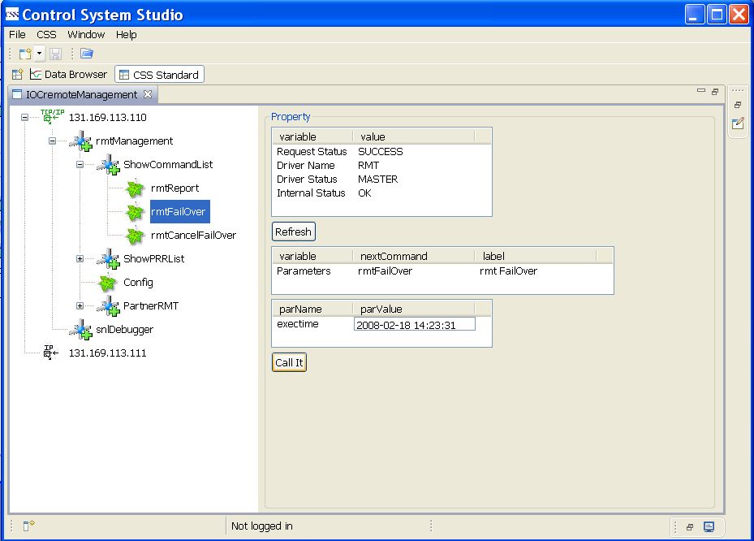
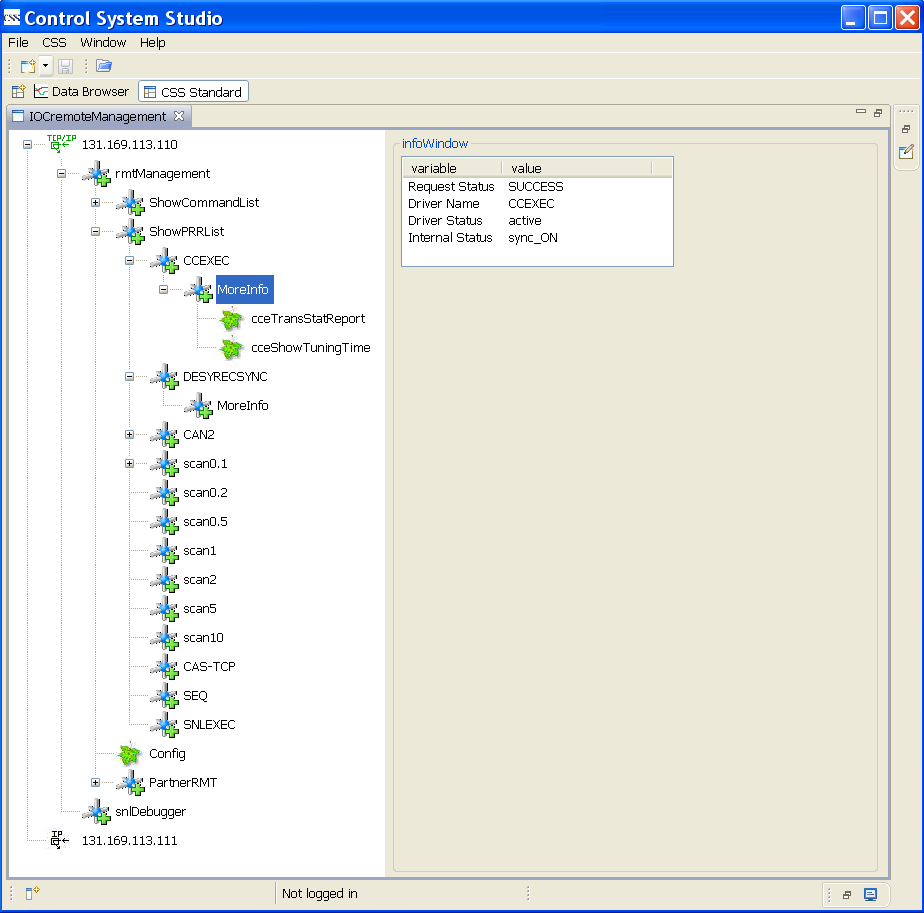
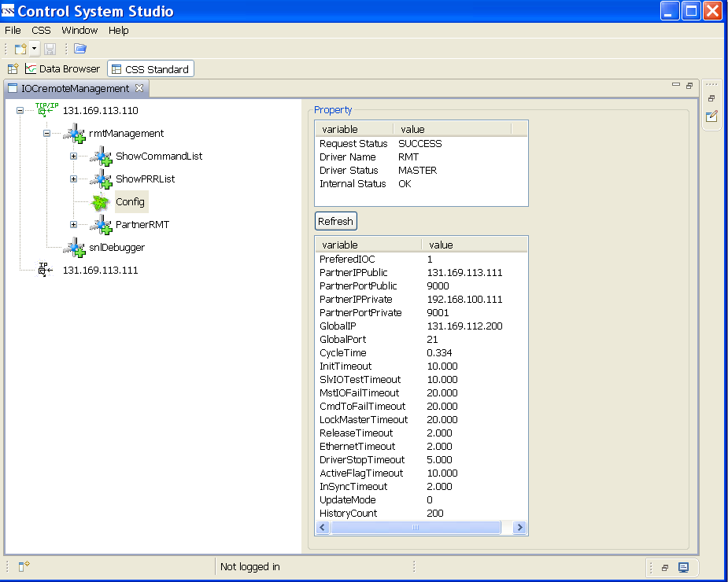

RMT Management is a tool to manage Redundancy Monitor Task(RMT). It can show the general information
of RMT, e.g. RMT state(MASTER or SLAVE), Ethernet connection status, Primary Redundancy Resources(PRR)
number, etc. It can also show the configuration info and its partner's info. Some RMT commands can be issued
from RMT Management. PRR list can be shown, and the deeper info about each PRR can also be shown.
The following figure is the interface of CSS RMT Management. The left part is a tree structure and
right part shows the details related to the selected node.Some genenral info are shown on the top
of right side.
- "Request Status" is the result of the request. It is SUCCESS if the request is successful,
otherwise is FAILED.
- "Driver Name" is RMT or PRR name.
- "Driver Status" is related to the IOC state and Driver Name. It is MASTER or SLAVE when IOC is
master or slave and Driver Name is RMT. It is active or inactive when IOC is master or slave and
Driver Name is PRR name.
- "Internal Status" shows the synchronization status of PRR at present.

RMT Management is a part of IOCremoteManagement. IOCremoteManagement can be launched from CSS menu
CSS->Diagnostic Tools->IOCremoteManagement. A list of IOC IP addresses is shown on the left of
the interface at the beginning. IP addresses are configurable. Two IOC addresses are shown in
the following figure and these two IOCs form a redundant IOC pair.

After clicking an IP address, two branches are shown: rmtManagement and snlDebugger. rmtManagement is
for RMT management; snlDebugger is for SNL Debugger and is not discussed here.

After clicking rmtManagement, three sub-branches and one leaf are shown : ShowCommandList,
ShowPRRList, Config, and PartnerRMT. Each sub-branch has its own sub-branch or leaf. ShowCommandList
is a RMT command collection. ShowPRRList is to list all registered PRRs. Config is to show the
configuration info. PartnerRMT shows the info related to its partner.

There are three RMT commands: rmtReport, rmtFailOver and rmtCancelFailOver.
rmtReport is to report the recorded RMT activities.

rmtFailOver is to switch over the RMT state. The preconditions are that the IOC is MASTER and
the private ethernet connection is OK. You should click the button "call it" after inputting
exectime. If exectime is null, rmtFailOver will execute immediately.

rmtCancelFailOver is to cancel rmtFailOver.

All registered PRRs are listed. There are 13 PRRs in the following figure. The name with prefix
"scan" is for scan task. "CAS-TCP" is for Channel Access server. "SEQ" is for sequence. "CCEXEC"
is for Continuous Control Exective(CCE). "SNLEXEC" is for SNL Executive. These 11 PRRs are necessary
for a redudant IOC system normally. DESYRECSYNC is a special PRR to synchronize the internal data of
diglog record which is developed at DESY. CAN2 is a field bus driver.

After clicking the PRR name the general info is shown on the right side and a sub-branch "MoreInfo"
is grown on the tree. You can get the deeper info about the PRR when you click "MoreInfo".

Config is to show the configuration info.

PartnerRMT shows the info related to its partner. You can get the partner's configuration info
if you click the leaf "Config".